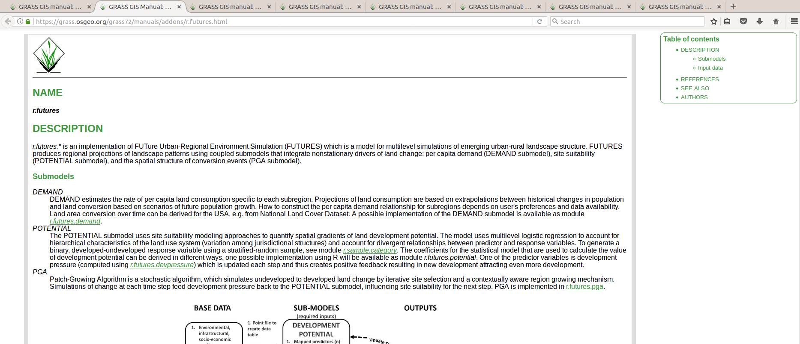

A reproducible paper
Vaclav (Vashek) Petras
NCSU
GeoForAll Lab
at the
Center for Geospatial Analytics
North Carolina State University
NCSU GIS 595-601: Tools for open geospatial science
November 15, 2017
Publishing research
The Particulars. Of Those Observations of the Planet Mars, Formerly Intimated to Have Been Made at London in the Months of February and March A. 1665/6. (1665). Philosophical Transactions (1665-1678), 1, 239-242. Retrieved from JSTOR
Publishing goals
- registration so that scientists get credit
- archiving so that we preserve knowledge for the future
- dissemination so that people can use this knowledge
- peer review so that we know it's worth it
Open Science
 [Buckheit and Donoho 1995, Peng 2011, Rodríguez-Sánchez et al. 2016, Marwick 2016]
[Buckheit and Donoho 1995, Peng 2011, Rodríguez-Sánchez et al. 2016, Marwick 2016]
Image credit: CC BY-SA Comtebenoit, Wikimedia
Text
If the paper source format is LaTeX or other markup, the figures, tables, or even bigger parts can be generated using scripts and automatically included.
If the paper source format is Jupyter Notebook or other notebook-like format, everything including text, figures, and code is at one place included in the final document.

Collaborative writing
Overleaf, Authorea, ...combined with Git

Scripting the process
Bash and GRASS GISr.in.lidar input=points.las output=elevation -e
from grass.script import run_command
run_command("r.in.lidar", input="points.las", output="elevation", flags="e")
library(rgrass7)
execGRASS("r.in.lidar", input="points.las", output="elevation", flags="e")
Computational notebooks
- interactive document with text, code, and figures
- languages: Python, R, Bash, C, C++, Octave, ...
- Jupyter Notebook, R Markdown (Notebook), Emacs Org-mode, ...

Publishing code

Published computational research
FUTURES - urban-rural landscape patterns simulation
model implemented as a set of GRASS GIS addon modules
r.futures.pga, r.futures.demand, r.futures.parallelpga, ...

FUTURES: Text

FUTURES: Source code

FUTURES: Source code history

FUTURES: Documentation
FUTURES: Graphical user interface

Integration into a larger project
- Preprocessing, visualization, and user interface (GUI, CLI, API)
- Integration with existing analytical tools
- Inputs, outputs, memory management and other common features
- Long-term maintenance
- Options: GRASS GIS module, R package, Python package, QGIS plugin, ...

Environment to run the code
- dependencies
- environmental settings
- file structure
- Solutions: Docker, Vagrant, virtual machines ...
FROM ubuntu:16.04
RUN apt-get update
RUN apt-get install -y \
g++ \
python \
python-numpy \
netcdf-bin \
sqlite3 \
...
WORKDIR /data
File versions

Revision control
Git (git), Subversion (svn), Mercurial (hg), ...

git commit script.py -m "replaced part of the main equation"
Research publication
| Text | background, methods, results, discussion | PDF, HTML |
| Data | methods as GRASS GIS modules | open formats, * |
| Reusable code | generally and reusably implemented methods | Python, R, C |
| Specific code | scripts to generate results | Bash, Python, R, * |
| Environment | details about all dependencies and the code | Docker, Vagrant |
| Versions | repository with current and previous versions | Git, Mercurial |
* Potentially included in computational notebooks such as Jupyter Notebook
Image credit: CC BY-SA Comtebenoit, Wikimedia
Evaluation of the methods and tools
- Science:*
- replicability independent validation of specific findings
- repeatability same conditions, people, instruments, ... (test–retest reliability)
- recomputability same results in computational research
- reproducibility obtain again same results from the raw data
- reusability use again the same data or methods
- Your lab:
- collaboration work together with someone
- transfer pass research to someone else
- You:
- revisit return to project after some time
- correction correct a mistake in the research
- extension improve or build on an existing project


{kind=link}